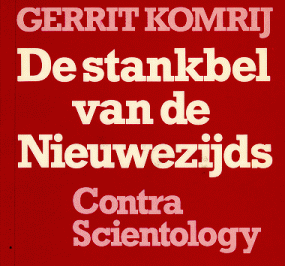
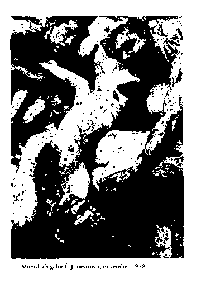
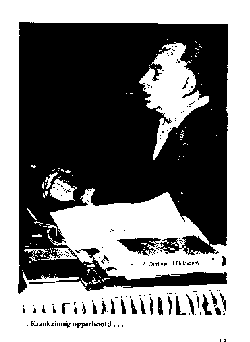
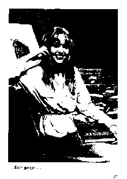

Na de massale slachting onder de secte-leden van de People's Temple in het oerwoud van Guyana, allen volgelingen van de profeet Jim Jones, zijn vergelijkbare religieuze wereldorganisaties, zoals te begrijpen valt, ineens nogal nerveus geworden. Ze hielden wel van publiciteit, maar dit was niet de publiciteit die ze bedoelden. Het gordijn van de religie dat voor hun binnenkamers van machtswellust en winstbejag hing was door dit bloedbad wel erg ruw gescheurd. Teveel walm steeg op. Naarstig namen de concurrerende terreurorganisaties naald en draad ter hand om hun gordijn van onschuld met nieuwe kruissteken te verfraaien en van steviger voeringen te voorzien. Cleaning up. Het verbaasde me dus maar weinig dat ik, na zoveel tijd, weer iets van de Scientology vernam. Ik was ooit eens een kruimeltje op hun tapijt geweest, maar bij het uitschudden van het tapijt gaan ook de kruimeltjes omhoog.
Als kruimeltje gluurde ik destijds - mijn nederige positie stelde me daartoe in staat! - onder het gordijn van de Scientologen door, en ik zag daarachter bloed, veel bloed, krankzinnigheid en een gigantische kassa.
De eerste stormloop van de Scientologen heeft uw dienstwillig kruimeltje fier het hoofd geboden. Dat was in 1974. In Propria Cures, waarvan ik destijds gastredacteur was, een eer die ik maar moeizaam te boven ben gekomen, klaagde ik onder de titel Nederland loopt gevaar! deze obscure beweging aan, met alle felheid die ik in me had. Geloof me, ook 'n kruimel kan zich roeren.
In dat artikel - ik herhaal het maar, het is al weer vijf jaar geleden; ook kunt u het nalezen in het boek Papieren tijgers stelde ik de Scientology ('een beweging waarbij vergeleken de jehova's Getulgen van de heer Knorr een zachtaardig stelletje bloedzuigers zijn') mede verantwoordelijk voor de dood van de journalist Johan Phaff, die in opdracht van het ministerie van justitie, het ministerie van Sociale Zaken en Volksgezondheid en het ministerie van Binnenlandse Zaken bezig was over deze beweging een rapport op re stellen. Phaff was zo geschrokken van de walm die opsteee dat hij de bevindingen van zijn getergde reukorgaan had meegedeeld in enkele artikelen in Vrij Nederland. Naar aanleiding daarvan werd hem gevraagd 'n nader onderzoek te verrichten. Had hij dit nu maar niet gedaan ...
Er werden processes aangespannen. De Scientology Kerk spant altijd onmiddellijk processen aan en richt zich - 'n tweede door de Jim Jones van de Scientology, de krankzinnig geworden Ron Hubbard die vanaf zijn vloot op een der wereldzee n de beweging met strakke hand leidt, voorgeschreven regel - steeds rechtstreeks tot de hoogste instanties. De Scientology Kerk schreef dus een brief aan 'Zijne Excellentie De Minister van justitie', destijds de heer Van Agt. In deze brief (gedateerd 22 april 1972) staan, naast loftuitingen over de beweging zelf, onder meer de volgende zinsneden:
'De heer Phaff is journalist, niet meer, niet minder. Hij heeft geen officiele positie.
Hij werkt voor Vrij Nederland, een weekblad waarvan bekend is dat het nieuws sensationeel presenteert. (...)
We zijn niet overgelukkig met het idee dat Uw ministerie zou afgaan op enig rapport van de hand van de Heer Phaff. Om grofweg oprecht te zijn, beschouwen we hem als oneerlijk en onbetrouwbaar.'
Om grofweg oprecht te zijn ...
De heer Phaff heeft zijn onderzoek nooit kunnen voltooien.
Ik weet niet wat de heer Van Agt met deze brief, waarvan ik een kopie bezit (die zich met alle andere documenten betreffende deze zaak uiteraard in een loden bankkluis bevindt), heeft gedaan. Ik vrees ... niets. Want de Scientology kon ongestoord verder intimideren en haar aanhangers in de ban van horigheid en doodsangst houden.
De overheid deed, ook al overleed een van haar tijdelijke werknemers in de uitoefening van zijn functie ... niets. Het bleef bij 'belangstelling'.
Wel sommeerde de advocaat C.H.R. Hulsenbek namens de Church of Scientology of California World Wide op 11 juni 1974 Propria Cures om correcties op te nemen,
'Correcties' die uit propagandaleuzen, botte nietes-wellesreacties en in kromtaal gestelde belachelijkheden bestonden.
Ik antwoordde er, om grofweg oprecht te zijn, op met een artikel Moord als geloof.
De Scientology-secte zweeg. Het was haar blijkbaar niet gelukt door bijzaken de aandacht af te wenden van waar het om ging: haar eigen misdadigheid. Misschien vond ze ook dat Propria Cures, nu ik immers niet langer gastredacteur was, aan belangwekkendheid had ingeboet.
Nog in december 1974 diende er voor de Amsterdamse rechtbank een kort geding dat de Scientology Kerk (met als raadsman ditmaal mr. W. Voerman) had aangespannen 'tegen een werkgroep van zes hogere ambtenaren van de ministeries van justitie en volksgezondheid en cen tweetal geinteresseerde particulieren', zo meldde NRC/Handelsblad van 17 december 1974.
De hysterische secte eiste op straffe van een dwangsom het verbod om 'zowel binnen de werkgroep als in het openbaar via publikaties onjuiste informatie te verspreiden over de Scientologen.'
De eis luidde dus dat er gezwegen moest worden nog voordat er iets was gezegd. 'n Curieuze eis . . .
Maar, zo heet het in een andere richtlijn van de zich heerser over de wereld wanende Hubbard elke verdediging is voor ons onhoudbaar. De enige manier waarop we ons verdedigen is
door aan te vallen.' En: 'Als u zich verzet tegen de Scientology zoeken we u onmiddellijk op - u zult merken dat we u aan de kaak zullen stellen ... wie ons het leven zuur probeert te maken neemt een groot risico op zich.'
Ook van genoemde werkgroep is niets meer vernomen. Lieten de Scientologen het destijds eveneens bij sputteren, bij ‘n rondje brutaal stampen? Ze hadden in andere landen, ver van de werkgroepen en Van Agt, flinke tegenslagen te verduren gehad. Of bestond de werkgroep zelf soms voor 'n deel uit Scientologen? Ik neem maar aan dat het niet opportuun voor ze was om op dat moment het achterste van hun tong te laten zien. Ze stampten dus, als olifanten die niet boos maar bedroefd zijn, en daar bleef het bij. Ook uw nederig kruimeltje werd enkele malen omhooggestampt, en voelde zich dan behoorlijk luchtziek. Ik werd belasterd. Ongevraagd klampten ze me aan, en uit hun roofzuchtige colportage-blik straalde het voorgeprogrammeerde gelijk. Er werden dreigementen geuit. Ik dacht er enige tijd ernstig over naar Engeland, Frankrijk of Australie te vertrekken, de landen waar de Scientology Kerk door de regeringen tot 'n gevaarlijke of verboden organisatie was verklaard. Maar Engeland , dat kon ik mezelf niet aandoen, want ik wilde niet van de honger omkomen, Frankrijk, dat kon ik mijn land niet aandoen, want bijna alle Nederlandse literatuur kwam daar al vandaan, en Australie? Ja, daar was ik even mooi gek.
Wat deed onze regering? Onze regering deed, gewoonte getrouw, niets. Worden Nederlandse regeringen eerst wakker als het bloed al langs de richels ritselt? Het zou niet de eerste keer zijn.
Stel een werkgroep in, en het probleem is al half opgelost, luidt de Haagse leus.
Waarom heeft de regering ooit opdracht gegeven tot een onderzoek, daarna nog eens een uitgebreide commissie ingesteld, en er verder het zwijgen toegedaan?
En: hoe zit dat nu na jonestown?

Stank trekt stank aan. Als u er -in slaagt om, met een zuidwester en een gasmasker op, tegen de walm van warme sauzen die opstijgt uit de mosselkraam voor het Amsterdamse restaurant Dorrius, de gaarkeuken van de bourgeoisie, op te tornen, als u deze walm die op sommige zomerdagen de hele Nieuwezijds Voorburgwal van Spui tot Dam vergiftigt, misselijk makend en wee, hebt weten te weerstaan, dan treft u bij het epicentrum van die culinaire gasbel, op nummer 312, het nieuwe gebouw van de Scientology-secte aan. Scientology Kerk staat er uitnodigend op de gevel. Stinkers hokken graag bij stinkers.
'Hello! Mijn naam is Ron L. Hubbard. Ik ben de stichter van de Scientology Kerk. De Leider, de Duce. Ik heb die fantastische organisatie helemaal zelf bedacht. Call me Ron.
Sommige mensen zeggen dat ik honger en dorst naar macht, en dat ik jonge mensen misbruik. Dat alles is vuile laster. Andere infame lieden beweren dat ik uit ben op geld, en dat ik daarom de mensen die het voor me binnenhalen geestelijk om zeep help. Dat is liederlijke talk.
De Scientology heeft niets te verbergen. Wij zijn redelijke lieden, en hebben niets te maken met al die stakkers die ons proberen te bevuden. We zijn een open kerk, en we zullen niet dulden als iemand dat niet bevalt.
Ook zijn er stakkers die beweren dat wij iedereen die kritiek op ons heeft bedreigen en het leven zuur maken. Dat is een ernstige beschuldiging en een triest ding. We verwachten, eerlijk gezegd, dat daar snel een einde aan komt. We zijn niet gek. We zijn Ron L. Hubbard. Call us Ron.
Tienduizenden jongens en meisjes, overal ter wereld, hebben hun weg tot de Scientology gevonden. Hun ouders horen niets meer van ze. Daarom zal ik bun ouders vertellen wat deze kinderen zoal doen. in het kort, natuurlijk, want ik kan onmogelijk de hele rijkdom van de Scientology ontvouwen, ik moet vanavond nog een aandelenportefeuflle doorwerken en er wachten zeven meisjes voor mijn kajuitdeur. Ik ben hun Duce, bun super-auditor.
We hebben een heel leger auditors. Het is de taak van de auditors onze pupillen Clear te maken. Tegenwoordig maken we Clears in vele gevallen zo snel, dat de nummers op de armband van de Clearing Cursus met duizenden per maand omhoogschieten! Onze auditors krijgen pijn in hun benen van het in- en uitlopen van sessions. Het is vreselijk.
We treffen soms zelfs Dianetic Clears van 1949 en 1950 aan, nu in hun volgende leven, We maken dus nict alleen nieuwe Clears, we treffen oude aan - zo groot is de kracht van de Dianetics van het Nieuwe Tijdperk!
Maar terug naar mijn jonge pupillen. Het belangrijkste is wel onze Nieuwe Drug Rundown! Deze Rundown vormt de oplossing voor de dromen van elke druggebruiker. Zonder ontwenningssymptomen en op een raketreisje zonder pijn of spanning keert hij regelrecht terug naar het leven.
Met een goeie, in New Era Dianetics getrainde auditor, zijn de kosten van een afdoende, voltooide, beeindigde Drug Rundown veel minder dan vroeger het geval was, en veel minder dan druggebruik kost. De Maffia, het Drug Enforcement Agency, de ministeries van Volksgezondheid en andere misdadigers haten het, aangezien zij er hun werk door kwijtraken. Vroeger, dat is waar, namen onze Drug Rundowns vaak honderden uren in beslag en iemand zei dat het vele duizenden dollars zou hebben gekost om ze re voltooien. Maar de NED Drug Rundowns van nu worden zoef, zoef, zoef voltooid in een tot twee intensives.
En voor moeilijke gevallen hebben we een Reparatielijst voor het Eind van Eindeloze Drug Rundowns en een speciaal zweetprogramma, dat bedoeld is tegen de drug van de inlichtingendiensten, LSD: tamelijk zwaar, maar iedereen die de moed heeft opgebracht het Zweetprogramma vol te houden is stralend als een goudklompje geworden!
Dan zijn er de Rundowns voor niet-druggebruikers. We bieden tegen belachelijke kostprijs een Opluchting-Rundown aan, waarmee de verliezen die mensen tot wanhoop en tot de schaduwen van het leven drijven worden behandeld en waarmee de tranen der eeuwen worden afgeveegd, een identiteit Rundown en een Gebreken-Rundown: we beschikken over een manier om Alle gebreken, vanaf het onvermogen om met meisies te praten tot onvermogen om Arabisch te spreken, te verhelpen.
Hierna volgt de Super Power, een super-fantastische, maar vertrouwelijke reeks Rundowns die op iedereen worden toegepast en waarmee iemand in geweldige vorm wordt gebracht, tot de Super Power van een Thetan wordt ontketend. Wow! Dit is het middel dat Scientologen in een nieuw rijk van bekwaamheid en vermogen brengt en ze in staat stelt de Nieuwe Wereld te scheppen.

Zo iemand is Dianetic Clear geworden en mag een uniform dragen. Uit Duitse magazijnen hebben wij grote partijen uniformen, die er nog lagen van 'n zekere oorlog, tegen een zacht prijsje bemachtigd. Iedereen die zo'n uniform aanheeft mag zelf auditeren en krijgt bovendien de bevoegdheid om te vergeven: het is hem mogelijk geworden de cyclus van elke schaamte, blaam, spijt of schuld uit het verleden volledig te beeindigen.
De Scientology-secte gaat prat op triomfen die de argwaan bij potentiele slachtoffers onder de eeuwige generatie zonder houvast, de jeugd, kan wegnemen, ze zet alles op alles om de drempels weg te halen waarover de kinderen die ze haar 'kerk' probeert binnen te lokken (om ze vervolgens nooit meer los te laten, geestelijk en financiecl te terroriseren en rijp te maken voor haar elitekorpsen) zouden kunnen struikelen. Soms is het ‘n klein triomfje, maar het wordt altijd breed uitgemeten: zo verkondigde de secte destijds dat 'de drummer' van David Bowie in haar 'kerk' in het huwelijk was getreden, en ze liet deze verkondiging vergezeld aan van foto's van het stralende bruidspaar voor haar hoofdkantoor in Saint Hill. Deze klopgeest was niet de eerste pop- of filmster, die de hasj-pijp had ingeruid voor de Scientology en zijn Indiase goeroe voor de super-fantastische Ron Hubbard ...
In het jaar dat achter ons ligt draaide de Scientology-publiciteitsmolen weer volop toen John Travolta, dat deerniswekkende zeepbelsymbool van ethisch revel en hernieuwde braafheid, in een interview had verklaard Scientoloog te zijn. Dat kwam nu wel bijzonder goed uit, want deze anachronistische sul wiens hersens in zijn benen zaten en wiens liefdesleven zich afspeelde op het niveau van Donald Duck, had zich een warme plaats verworven in menig jeugdig hart van Nova Zembla tot Timboektoe. De wanden van miljoenen ongemeubdeerde hersens waren behangen met zijn portret. De Scientology-secte fungeerde maar al te graag als lijmpot.
De Scientology zoekt het altijd hogerop, 't liefst zo hoog mogelijk, en is verzot op namen, invloed en gezag. Ze tracht dus niet alleen filmsterren, maar ook wetenschapsmensen voor haar mestkar te spannen. Telkens als een hoogleraar in de godsdienstwetenschap iets gunstigs over de Scientology beweert wordt dat miljoenvoudig verspreid, als bewijs van de welriekendheid van de mestkar. Nu zie ik niet in, waarom er onder godsdienstwetenschappers geen halvegaren zouden rondlopen of religieuze John Travolta's: zoals 'n hoogleraar in de ethiek heel wel in staat geacht mag worden zijn vrouw te vierendelen of zijn kater te braden in kokende olie, zo kan een godsdienstwetenschapper zich ook best tooien met een puntmuts van de Ku Klux Klan: zijn specialiteit biedt geen enkele waarborg tegen ontsporingen. Integendeel, zou ik zeggen. Er zijn genoeg ruimtevaartdeskundigen die, al is het maar een keer in de week, zingen dat God de wereld in zeven dagen schiep.
Zo woonden drie Nederlandse wetenschappelijke onderzoekers, onder wie de Utrechtse lector in de godsdienstwetenschappen J.D.J. Waardenburg, onlangs in Boston een congres van de Moon-secte bij, waarop ook de Koreaan Moon zelf aanwezig was. Er ontstond op dat congres nogal wat verwarring, omdat tegelijkertijd de zelfmoord van (de moord op) de negenhonderd volgelingen van de jones-secte in Guyana plaatshad.
'Dr. Waardenburg zegt desgevraagd,' meldt de Volkskrant van 9 februari 1979, 'nog niet gemerkt te hebben dat er misbruik van zijn deelname is gemaakt, hoewel hij dat niet onmogelijk acht. De sekte nodigt volgens Waardenburg zoveel wetenschappers uit om het eigen prestige te verhogen.'
'Hoe je naam wordt gebruikt blijft in het duister,' zegt Waardenburg nogal lakoniek tot de verslaggever. 'Zo gauw je beroemd bent ligt dat natuurlijk wel anders. Maar als Utrechts lectortje ben je niet zo boeiend in de wereld.'
Kom, kom, lectortje, niet zo bescheiden! Wat is in 's hemelsnaam een 'beroemd' godsdienstwetenschapper? Een man die 'beroemde' godsdiensten bestudeert? Dan is Utrecht zo'n gekke plaats nog niet.
Ook bij het pareren van kritiek op hun duistere wandel volgen de Scientologen een vaste taktiek. Ze gaan nooit in op beschuldigingen, hoe waar die ook zijn - nee, ze zoeken - of bedenken - belastend materiaal om er degene die ze heeft beschuldigd mee in diskrediet te brengen. Ik gaf daar al eerder ongehoorde voorbeelden van. Ze schrijven gefingeerde brieven en zenden die rond - zo werden nogal wat kritische onderzoekers aan universiteiten in Engeland en Amerika bij hun bestuur of rector op het matje geroepen en kwamen daar oog in oog te staan met door hen gesigneerde homoseksuele liefdesbrieven - of brieven waarin van vreemde verlangens, financiele manipulaties en andersoortige overtredingen sprake was - die ze nooit hadden geschreven.
Welaan!
Ik verklaar hierbij openlijk, opdat die misdadige bende het hore (in de fase waarin ik thans ten opzichte van ze verkeer - dreigementen, pesterijen, huisvredebreuken) dat ik al sinds jaren hoog en breed homoseksueel ben, dat ik van 's morgens vroeg tot 's avonds laat, ja ook wanneer ik slaap, de meest bizarre verlangens koester, en zowel financieel als andersoortig een weelderig verleden aan manipulaties en overtredingen achter me heb. Ik geef zelfs van ganser harte nu reeds al het kwaad toe dat ik nog hoop te stichten. Opdat men zich de moeite bespare!
Het aanspannen van processen, ik zei het al eerder, is 'n andere potsierlijke hobby van ze, even potsierlijk als hun verweer tegen beschuldigingen. Ze doen of ze die niet horen, en achten het al voldoende bewijs wanneer ze verklaringen van hoogleraren rondsturen die plechtig beweren dat de Scientology een bonafide kerk is, die dezelfde rechten als andere kerken dient te genieten, waaronder natuurlijk vooral . . . het recht van belastingvrijdom.
De vrijheid van godsdienst is 'n twijfelachtig goed!
Een van de verklaringen waarmee de Scientologen altijd komen aandraven, zoals een kluif in de bek van een bloedhond, is van de hand van prof. J.J. Carey, hoogleraar in de godsdienst-
wetenschappen en voorzitter van de reli 'euze faculteit van de Florida State University in
Tallahassee. Zeg nu zelf Tallahassee, dat is toch heel wat anders dan Utrecht?
En, zeg wederom zelf: als een hoogleraar in de natuurwetenschappen verklaart dat een ei vierkant is, dan moet dat toch waar zijn? Zo 'redeneren' de Scientologen, in hun honger naar gezag.
Als de Scientologen dreigen of waarschuwen, doen ze dat steevast in een taaltje dat een mengeling vormt van komieke pedanterie en ijzige rechtlijnigheid. De Uitgeverij De Arbeiderspers ontving, toen ze het boek Papieren tijgers waarin een hoofdstuk over Scientology voorkomt had gepubliceerd, een brief van de Scientology Kerk te Amsterdam. Hun woordvoerder, Frits de Wolff, beklaagde zich over 'grove beweringen' en 'benadrukte' dat enkele passages vielen onder art. 1408 van het Burgerlijk Wetboek.
'Zoals U weet, zijn deze beweringen totaal ongegrond,' stond in de brief. Zoals u weet ... We wisten het niet. En de brief vervolgde:
'Welke de motieven van de schrijver ook waren, het moet als onjuist worden beschouwd om leugens in een boek te publiceren. Daarom moeten de consequenties aanvaard worden.
Wij vragen U dan ook, om Uw verontschuldigingen aan te bieden, en wel per ommegaande brief waarin wordt beloofd dat het boek in zijn huidige vorm niet verder zal worden verspreid.
Wij verwachten Uw verontschuldigingen en verklaring op zijn laatst op ... [volgt datum], daarna zullen wij een rechtzaak tegen Uw firma in ogenschouw moeten nemen. Hetzelfde geldt natuurlijk voor de schrijver van het verhaal. Op deze manier zullen wij verdere verspreiding voorkomen van grove leugens en wij zullen natuurlijk schadevergoeding ontvangen, schade die ons aangedaan is door de verspreiding van het boek.
Wij zijn er verder van overtuigd dat U niet geinteresseerd bent in langdurige rechtskundige procedures en daarom vragen we U dan ook om positief op ons verzoek in te gaan.'
Het bleef ook ditmaal bij gesputter. Dat was jammer, want zowel de uitgever als ik wilden de consequenties best aanvaarden, waren juist zeer geinteresseerd in langdurige rechtskundige procedures, en vonden de vanzelfsprekendheid waarmee de Scientologen zich alvast een schadevergoeding toebedeelden (waarschijnlijk om Ron Hubbard in staat te stellen zijn onderhandelingspositie met de Russen, die vaak belangstelling hadden getoond voor de overname van zijn organisatie, te verbeteren) wel aardig. Wij zullen natuurlijk... Wij zijn er van overtuigd... ja, het was wel aardig.
Zes weken na de 'zelfmoord' van de negenhonderd leden van de secte van Jones (ook al zo'n lieveling van de Russen) werd het serieus. De aardigheid was eraf. Er kwamen opnieuw brieven, ditmaal van het centrale propaganda- en controle-orgaan Zelfl het Guardians Office Europe in Kopenhagen, Denemarken.
Deze brieven waren ondertekend door een heuse Reverend - een soort priestertitel die bij de Scientology na enkele dure cursussen verkrijgbaar is en die het recht geeft als auditor op te treden. Wat is een auditor nu weer? Een auditor is iemand die de biecht afneemt. Wat voor soort biecht mag, dat wel zijn? Het is een biecht die de biechteling zelf, voor een uurtarief, moet betalen en in ruil waarvoor hij of zij tot seksueel contact met de auditor mag overgaan, waarna de genoteerde bekentenissen en intimiteiten in een dossier worden doorgezonden naar het hoofdkantoor van Ron zodat ... de biechteling kan worden gechanteerd met materiaal dat hij zelf heeft gefinancierd.
Ik wil u niet met al de brieven van de Reverend vervelen. Juvonen heet hij, Allan Juvonen. Ook bij hem weer die mengeling van optimisme en stelligheid: 'Ik kan u alleen een conversatie en enige documenten aanbieden. Dat hoeft slechts kort te duren, maar we kunnen alleen maar hopen dat het een boel misverstanden zal voorkomen of misschien wel jaren van smart en pijn, zowel voor u als voor de leden van onze gemeenschap in Nederland.'
Zo, zo.
We wezen al zijn verzoeken om een onderhoud af, dat spreekt vanzelf: adelaars spreken niet met adders, en papieren tijgers niet met hyena's van vlees en bloed.
Reverend Juvonen en zijn lijfwacht kwamen persoonlijk uit Kopenhagen naar Amsterdam . . . Mijn uitgever smeet ze dapper de trap af en ik, nog net iets dapperder, deed ze niet eens open. Uitgebreide analyses van 't artikel in Papieren tijgers volgden, dikke mappen ... Ik was er, terecht, trots op dat ik de enige Nederlandse schrijver was aan wie in Denemarken cursussen in close-reading werden gewijd. Er volgden ...
Genoeg! Niet mijn belevenissen zijn hier van belang, maar het intimiderende karakter van deze beweging. Eens om de zoveel jaar houden ze, als in een stuip, een schoonmaakactie, een campagne om slechte indrukken uit te wissen, hun critici omver te werpen. Dat deden ze na het 'geval' Charles Manson, die tijdens de moord op Sharon Tate en haar vrienden een belijdend Scientoloog was. Dat doen ze nu weer, na de bijna duizendvoudige moord in Jonestown. Ik antwoord er op met een eigen campagne: ik werp, op mijn beurt, hun organisatie omver.
Er zal in Nederland eindelijk worden geluisterd!
Weet de regering dat de Scientology Kerk in Nederland zeer actief is?
Weet de regering dat de Scientology een groepering is met death lessons en vernietigingsprogramma's?
Weet de regering dat veel ouders niet meer kunnen nagaan waar hun kinderen, als ze eenmaal door de Scientology zijn opgeslokt, verblijven noch wat er met ze gebeurt? Dat huwelijken, op bevel van Scientologen, worden ontbonden en familieleden die navraag doen gemolesteerd? Dat er, uit angst voor represailes, meestal geen aangifte wordt gedaan?
Kan de regering mij vertellen of zij, nu er toch zoveel telefoons worden afgetapt, soms toevallig vergat datzelfde te doen bij een echt gevaarlijke groepering?
Kan de regering mij vertellen waarom van de onderzoeken van de ministeries van justitie, Sociale Zaken en Volksgezondheid in 1973 en van een werkgroep van zes hogere ambtenaren in 1974 nooit meer iets werd vernomen?
Kan de regering mij vertellen welke hogere ambtenaren en leidinggevende militairen contacten onderhouden met de Scientoiogy-secte, en welke pogingen tot contact de secte in die kringen ondernam?
Kan de regering mij vertellen wat ze van plan is te doen tegen het financieel en seksueel uitbuiten van willoze slachtoffers, het onbevoegd uitoefenen van de geneeskunde, het voeren van valse titels, het ontduiken van de belasting en het op grote schaal chanteren van mensen door middel van E-meters, zogenaamde 'Ieugendetectoren' die bestaan uit twee met 'n touwtje aan elkaar geknoopte lege conservenblikjes?
Natuurlijk kan de regering mij dat niet vertellen. We wonen, dat is des Pudels Kern, nu eenmaal in een land waar de minister van CRM zojuist zendtijd verleende aan de Kerk van de Heiligen der Laatste Dagen en waar de president van de Nederlandse Bank onlangs via de radio opriep om de landelijke collecte van het Leger des Heils gul te bedenken, opdat eindelijk eens alle hoeren met behulp van blaasmuziek en soep konden worden gekerstend. (Ik bedoel hiermee niets ten gunste van de Nederlandse Bank)
In zo'n land wonen we. We hebben een regering van doorgewinterde secteleiders.
Daarom zal ik, als ik uit de geestelijke schemerwereld rondom het Binnenhof geen antwoord krijg, nog een campagne starten.
Ik ga de regering omverwerpen!
Ik verzoek iedereen die daar ook voor voelt mij van iedere vorm van bijval te verschonen.
Ik doe het wel in mijn eentje.
Het is zover. Met de zowel grappige als angstwekkende voorspelbaarheid die de Scientology Kerk eigen is diende ze, nadat ik de eerste versie van de voorgaande tekst in vijf afleveringen in NRC/Handelsblad had gepubliceerd, een klacht in bij de Raad voor de Journalistiek. De secte voelde zich belasterd en achtervolgd. De schurk wil voor slachtoffer spelen, de vervolger voor vervolgde.
De Scientology stuurde, om haar klacht aplomb te verlenen, zelfs een afschrift van de klacht naar het Nederlands juristen Comite voor de Mensenrechten - een van haar eigen mantelorganisaties ... Ocharm!
Dat de Scientologen een klacht bij de Raad voor de journalistiek indienden laat me koud. Ze hadden net zo goed hun beklag kunnen doen bij de Nederlandse Maatschappij voor Tuinbouwkunde. Ik ben geen journalist. Ik heb met de Raad niets te maken. Maar niet koud laat het me dat de woordvoerster van de zogenaamde kerk, Kiki Oostindien, een blond wicht dat ooit een 45-toerenplaatje volkweelde en zich sindsdien zangeres' noemt en bovendien, omdat ze zo geheel en al het uiterlijk van een dom gansje bezit, 'fotomodel' - dat deze Kiki over mij beweert: 'Komrij's gedrag maakt de waardigheid van de Nederlandse journalistiek compleet te schande en schaadt deze bovendien. (... ) Hij doet denken aan Goebbels, de minister van propaganda van de nazi's.'
Dat laatste, dat laat ik voor wat het is. Teveel eer voor Goebbels, zou ik zeggen.
Maar de waardigheid van de Nederlandse journalistiek?
Kom, kom, Kiki, waar hadden we het ook al weer over? Hadden we het over de waardigheid van iets waar jij geen benul van hebt, of over de methoden en ideeen van naar geld en macht hongerende secten, die ongestraft gehoorzame houten klazen maken van in de steek gelaten of ontredderde mensen? Ging het om de schade die ik de Nederlandse journalistiek berokkende, of om de schade die de Scientology dag in dag uit aan haar volgelingen berokkent, door ze gevangen te houden in een op waanzin, zot gewauwel en terreur gebaseerd systeem? Wie had hier klachten over wie?
Waarachtig, de waardigheid van de Nederlandse journalistiek is van geen belang vergeleken bij de toestand waarin al de stakkers aan wie jullie elke waardigheid hebben ontnomen ver keren.

Kiki, houten klazin, luister naar me! Blond schepsel van het lichte lied, door jullie office of Public Affairs als lege facade naar voren geschoven, leen me je oor! Niet minder dan vijftig leugens schreef ik, beweerde je. Hoeveel dan wel? Eenenvijftig, tweehonderd? Het doet er niet toe, dat begrijp ik, want alles wat aan jullie propaganda onwelgevallig is, is een leugen. Maar ik doe niet aan propaganda, want ik ben geen lid van een secte, noch van enige partij of boevenbende. Ik ben een schrijver en droeg er zorg voor dat elke beschuldiging die ik in zo'n ernstige zaak uitte, elk feit dat ik aandroeg stoelde op een do cument, op een verklaring, op wat ik met mijn klompen kon aanvoelen, kortom ... op de werkelijkheid en niet op welke hersenschimmige science-fiction van thetans en clears en orgs dan ook die jullie de werkelijkheid believen te noernen. Wie liegt zoals jullie past het niet om leugens te zoeken bij anderen. Hoe kan iemand die gelooft dat Ron Hubbard anderhalf triljoen jaar oud is, of daaromtrent, en al drie maal op bezoek is geweest bij God, mij van 'n leugen betichten?
LITERATUUR
Paulette Cooper: The Scandal of Scientology. New York, 1971.
Christopher Evans: Jezus leeft en woont op Venus. Amsterdam, 1973.
Gerrit Komrij: Papieren tijgers. Amsterdam, 1978.
Wiliam Rothuizen: Dossier Scientology. Haagse Post, 24 september 1977.
Cyril Vosper: The Mind Benders. Manchester, 1971.
Met dank aan NRC/Handelsblad, Vrij Nederland, Propria Cures, Furore, Real Free Press, jakob Andersen, Roy Wallis, Henry van Engelen, Jan Mud, J.v.D., J.A.H., A.N., D.A.K. en al de personen die niet genoemd kunnen of willen worden.
Komrij, G.
Bevat literatuuropgave. Grotendeels eeder verschenen in het "NRC/Handelsblad"
De stankbel va nde Nieuwezijds: contra scientology. - Amsterdam :
De Arbeiderspers, 1979, 31 blz.; afbn.
ISBN 90-295-2697-1